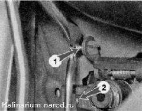
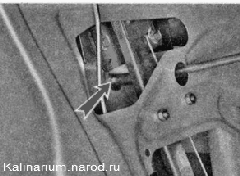
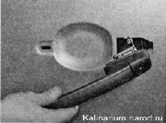

Наружная ручка передней двери - снятие и установкаСнятие 1. Подготавливаем автомобиль к выполнению работы. 2. Снимаем обивку двери. 3. Поддев шлицевой отверткой, отсоединяем тяги замка от рычага ручки 1 и тягу ручки от выключателя (личинки) замка 2  4. В нише двери торцовым ключом на 8 мм отворачиваем гайку крепления наружной ручки двери. 
5. Тем же ключом отворачиваем болт крепления ручки. 6. Снимаем ручку с двери вместе с резиновыми прокладками, установленными между ручкой и дверью. Установка Устанавливаем ручку в обратной последовательности, заменив поврежденные резиновые прокладки новыми и покрыв механизмы ручки смазкой типа ВТВ. |